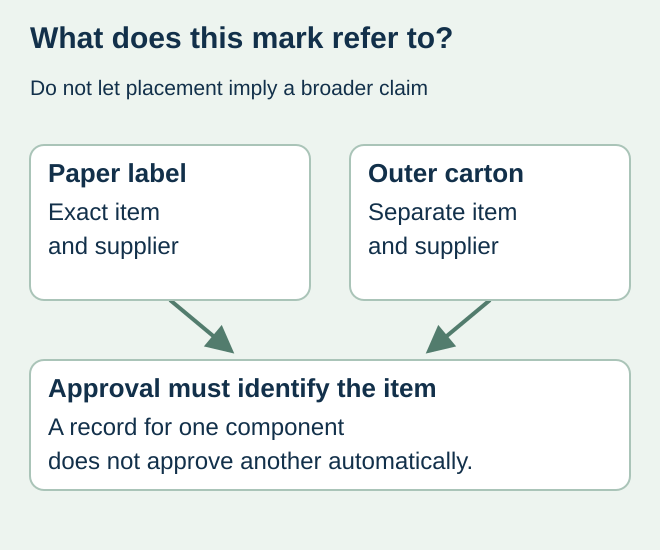
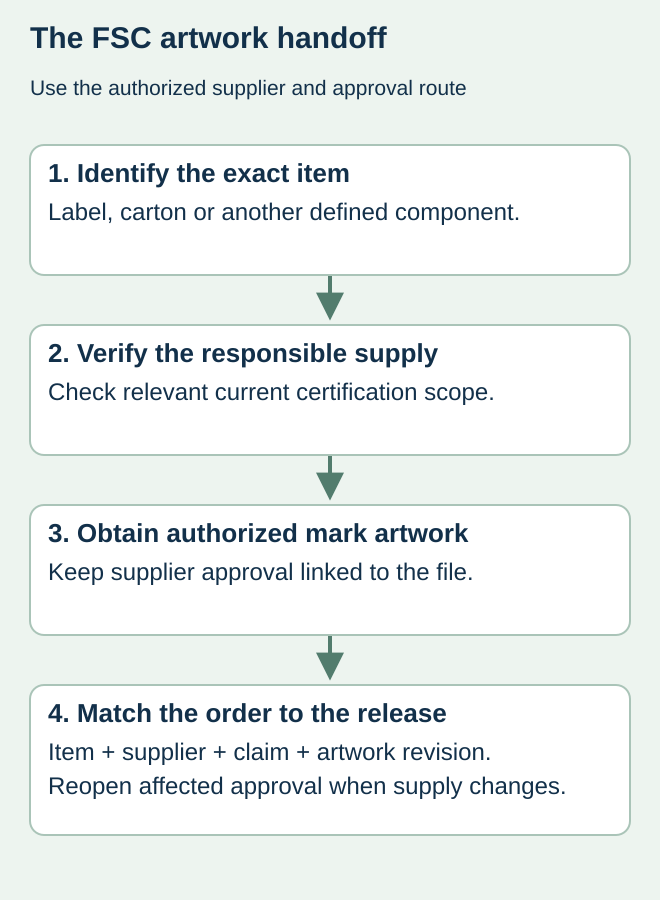

A food brand chooses a brown paper label and asks the designer to add an FSC mark. The appearance of the paper cannot establish the certification status, and a mark on a jar may leave customers unsure whether it refers to the label, carton or another component.
Identify the exact claimed item, verify the responsible certified supply route and obtain the authorized artwork approval before printing. Keep the scope visible to purchasing and design. Do not copy a mark from an unrelated package as a placeholder that later becomes production artwork.


Ask who is authorized to supply the marked item
FSC’s on-product label guidance explains the role of FSC-certified companies in applying on-product labels and obtaining the graphics and approvals. It directs buyers to verify the supplier of the final product. A paper mill’s certificate alone should not be treated as your completed printed item’s approval record.
Ask the proposed supplier to identify the exact certification scope and chain-of-custody arrangement relevant to the order. Check its current status through FSC’s official verification route. A similar company name or an old sales PDF is a reason to clarify the identity, not evidence that the exact proposed supply is covered.
Separate the mark, license identity and component
| Question | Record needed | Stop and clarify when |
|---|---|---|
| Which item? | Label, carton or other exact claimed component | The artwork could imply the whole pack |
| Which supplier? | Legal supplier and relevant current certification reference | Only a mill or unrelated affiliate is identified |
| Which artwork? | Authorized label graphic and required identity details | A designer copied or redrew another company’s graphic |
| Which approval? | Supplier’s applicable approval record and file revision | An attractive mockup is the only sign-off |
| Which order? | Item, quantity and agreed claim in the procurement record | Certified and unclaimed supply are mixed without identification |
This worksheet coordinates the questions; it does not prescribe a chain-of-custody system. Ask the certified supplier and relevant approving organization to confirm the actual route, including how the claim is represented in order documentation. Do not invent a certificate number or remove required details to fit a small label.


Resolve ambiguous package scope before layout lock
In a fictional jar launch, a separate shipping carton and a decorative paper label come from different suppliers. Approval relating to the carton does not automatically authorize a claim about the label. Identify what the proposed on-pack message means and obtain the responsible review of its location and wording.
Leave adequate artwork space for the authorized form rather than squeezing a downloaded logo into a leftover corner. If the proposed label is too small for the approved presentation, ask the responsible supplier for a permitted arrangement. Changing proportions, deleting text or making a similar tree symbol is not a procurement solution.
Do not expand a sourcing claim into other conclusions
FSC-related sourcing information does not by itself establish food-contact suitability, compostability or local recycling acceptance. Those questions need their own evidence for the complete intended construction and use. The compostable-pack guide handles a separate certification-scope decision.
Retain the approved mark output beside the production file and actual item reference. If the paper, supplier, claim or item changes, identify which approval must be reopened before reordering. A file that contains the same graphic can still represent a changed supply chain.
Discuss the unresolved label requirement
Identify the exact paper item to carry the claim, supplier and available certification references, proposed mark location and approval status. Ask us to confirm actual supply scope; this site does not assert FSC certification. Prepare a label specification inquiry. The contact page opens an email draft and lists email or WhatsApp for attachments. Supply, proof options, testing, pricing and timing require project confirmation.